0 - [0 1 2 3]
 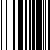
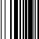
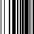
1 - [0 1 3 2]
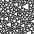
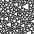
2 - [0 2 1 3]
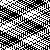 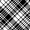
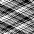 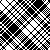
3 - [0 2 3 1]
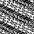 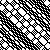
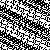 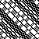
4 - [0 3 1 2]
 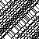
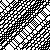
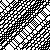
5 - [0 3 2 1]
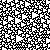 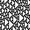
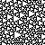 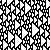
6 - [1 0 2 3]
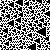
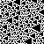
7 - [1 0 3 2]
 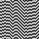
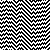
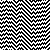
8 - [1 2 0 3]


9 - [1 2 3 0]
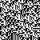 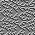
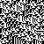 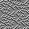
10 - [1 3 0 2]


11 - [1 3 2 0]
 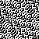
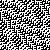
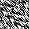
12 - [2 0 1 3]
 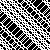
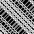
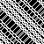
13 - [2 0 3 1]
 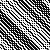
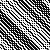
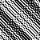
14 - [2 1 0 3]
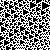 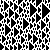
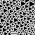 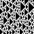
15 - [2 1 3 0]


16 - [2 3 0 1]
 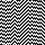
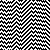
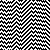
17 - [2 3 1 0]
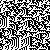 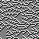
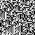 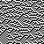
18 - [3 0 1 2]
 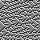
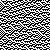
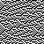
19 - [3 0 2 1]
 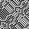
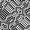
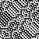
20 - [3 1 0 2]
 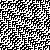
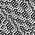
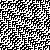
21 - [3 1 2 0]
 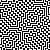
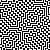
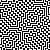
22 - [3 2 0 1]
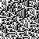
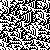
23 - [3 2 1 0]


 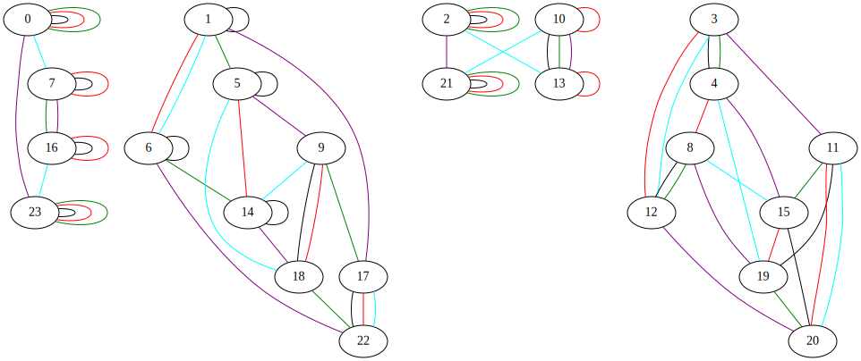
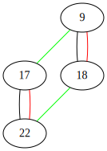
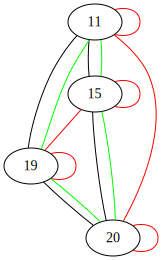
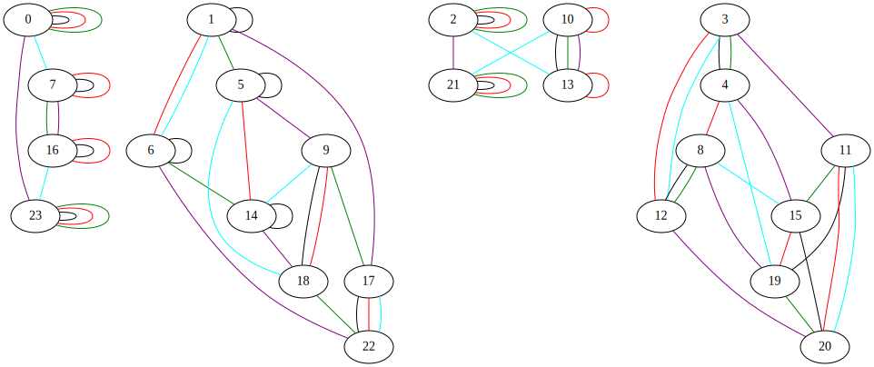
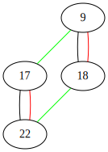
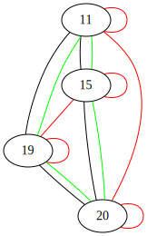

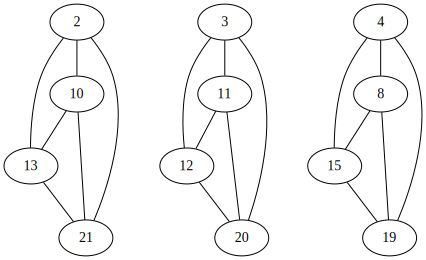